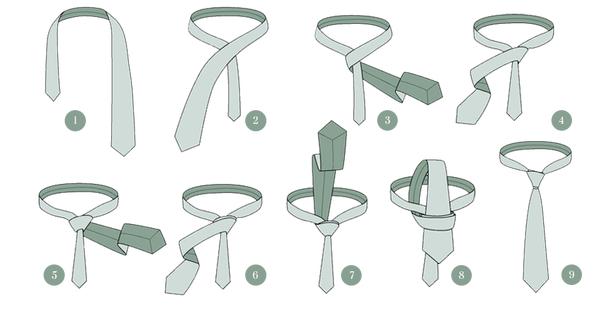

Le port de l’uniforme
Ces règles présentent les principaux éléments à respecter pour porter l’uniforme avec une apparence soignée et professionnelle.
La vareuse
La vareuse doit toujours être propre et bien repassée. Les manches doivent être repassées de manière à ne présenter aucun pli.
Elle se porte entièrement boutonnée, à l’exception du bouton supérieur.


La ceinture
La ceinture doit être ajustée de façon à ce que la partie qui dépasse de la boucle se retrouve du côté gauche.
La boucle doit être centrée avec les boutons de la vareuse.
La ceinture ne doit pas dépasser de plus de 5 cm de la première boucle permanente de la vareuse. Une ceinture trop longue ne doit pas être rentrée : elle doit être remplacée par une taille appropriée.
Pantalon et ceinture
Le pantalon doit être porté avec la ceinture noire et être bien repassé. Un pli doit être visible au centre de chaque jambe, à l’avant comme à l’arrière.
La longueur du pantalon doit arriver jusqu’au troisième œillet de la botte.
La ceinture doit être ajustée de façon à ce que l’excédent dépasse vers la gauche. La boucle doit être centrée et ajustée afin que l’excédent de la ceinture ne soit pas visible, pour conserver une apparence uniforme.
Bottes et chaussettes
Les bottes doivent être lacées horizontalement, d’un côté à l’autre, et être propres et bien lustrées en tout temps.
Les chaussettes de laine grise fournies peuvent être portées avec les bottes. Les cadets peuvent également porter leurs propres chaussettes grises ou noires, en laine, en coton ou en nylon.
Les chaussettes ne doivent pas être roulées vers le bas.
Les insignes
Les insignes doivent être solidement cousus sur la vareuse. Ils ne doivent pas être collés.
Insignes de grade
Pour les grades de cadet de l’Air de première classe, caporal, caporal de section, sergent et sergent de section, l’insigne de grade se porte sur les deux manches de la vareuse.
L’insigne doit être placé au centre de la manche, à mi-chemin entre le coude et la couture supérieure de l’épaule.

Pour les grades d’adjudant de 2e classe et d’adjudant de 1re classe, les insignes de grade se portent sur les deux manches de la vareuse, à 9 cm au-dessus de la manchette.

Insignes de qualification
L’insigne de qualification se porte au centre de la manche gauche de la vareuse, avec le bas de l’insigne situé à 9 cm au-dessus du haut de la manchette.
Aucun insigne de qualification n’est porté par les adjudants de 1re et de 2e classe.

Insignes de camps d’été
Les insignes de camps d’été se portent sur la manche droite de la vareuse.
Ils sont placés immédiatement au-dessus du haut de la manchette, dans l’ordre où ils ont été décernés.

Insigne de qualification
L’insigne de qualification se porte au centre de la manche gauche de la vareuse, avec le bas de l’insigne placé immédiatement au-dessus du haut de la manchette.
Seule la qualification la plus élevée obtenue doit être portée.

Poches de la vareuse
Certaines décorations et insignes se portent sur les poches de poitrine de la vareuse.


Plaquette patronymique | Name Tag
La plaquette patronymique se porte juste au-dessus de la poche de poitrine droite.
Lorsqu’une médaille est présente, la plaquette doit être placée 0,5 cm au-dessus de celle-ci.

Épinglette du Prix du Duc d’Édimbourg
L’épinglette de bronze, d’argent ou d’or du Prix du Duc d’Édimbourg se porte au centre de la poche de poitrine droite.
Elle doit être positionnée à distance égale entre la couture inférieure et le bas du rabat de la poche.

Médailles et rubans
Les médailles se portent juste au-dessus et au centre de la poche de poitrine droite de la vareuse. Lorsqu’il y a plusieurs médailles, elles sont placées sans espace entre elles, selon leur ordre de préséance. La médaille ayant la plus haute préséance est placée le plus près du centre de la poitrine.
L’illustration présente l’ordre dans lequel les médailles doivent être portées.
Les rubans se portent centrés juste au-dessus de la poche de poitrine droite de la vareuse ou de la chemise. Lorsqu’il y a plusieurs rubans, ceux-ci doivent être disposés selon l’ordre de préséance.
Insignes de pilote
Les insignes de pilote se portent centrés à 0,5 cm au-dessus de la poche de poitrine gauche sur la vareuse et la combinaison de vol.
Lorsqu’un cadet possède les deux qualifications de pilote, seul l’insigne de pilote d’avion est porté.

Insignes de compétition
Les insignes de compétition se portent au centre de la poche de poitrine gauche de la vareuse, à égale distance entre la couture inférieure et le bas du rabat de la poche.
Lorsque plusieurs insignes sont portés, ils doivent être disposés de haut en bas dans l’ordre suivant :
- Art oratoire
- Tir
- Biathlon

Chemise
La chemise doit être propre et bien repassée, avec un pli au centre de chaque manche.
Les fourreaux de grade doivent être portés sur la chemise.
Les éléments suivants peuvent également être portés sur la chemise :
- La plaquette patronymique
- Les rubans
- L’insigne de pilote en métal
Cravate
Lorsque la cravate est portée, elle doit être nouée soigneusement avec un nœud Windsor et rester bien ajustée autour du cou.
Une épingle à cravate ou un fixe-cravate sobre est également permis.

Manteau toutes saisons
Le manteau toutes saisons est le seul manteau autorisé avec l’uniforme. Il peut être porté en tout temps lorsque les conditions météorologiques l’exigent.
La doublure et le manteau extérieur peuvent être portés séparément ou ensemble.
Lorsqu’il est porté, les boutons-pression et la fermeture à glissière doivent être fermés jusqu’au deuxième bouton du haut.
Uniforme d’entraînement de campagne
La vareuse et le pantalon de la tenue d’entraînement C5 n’ont pas besoin d’être repassés, mais doivent être propres et exempts de plis importants.
Les manches peuvent être portées baissées ou retroussées. Les fourreaux de grade doivent être portés.
Lorsque les manches sont retroussées, elles doivent être propres, plates et soigneusement roulées jusqu’au coude. Aucun cordon de serrage ne doit être visible.
Le pantalon doit être porté avec la ceinture de pantalon noire et les jambes doivent être blousées autour des bottes multi-usage.
Bottes multi-usage
Les bottes doivent être propres en tout temps et lacées en croisé.
Elles ne doivent pas être cirées, mais peuvent être noircies à l’aide de cire à bottes.
Commander ou échanger son uniforme
Pour commander de nouvelles pièces d’uniforme ou effectuer un échange, veuillez remplir les formulaires prévus à cet effet.
Un guide de mesure est également disponible pour vous aider à choisir la bonne taille.